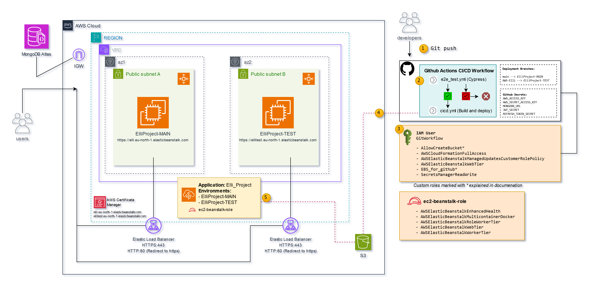
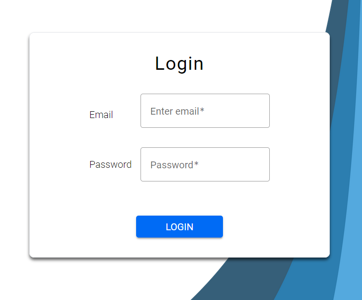
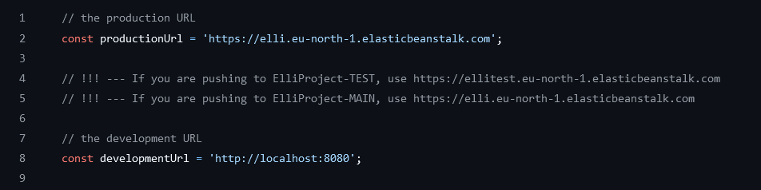

AWS Cloud
AWS Cloud Infrastructure with CI/CD Pipeline

{kind=link}
Overview
Elli application is made with Angular using Express and MongoDB Atlas as its database. The deployment to the cloud happens with AWS Elastic Beanstalk.
Very shortly explained how this configuration works when an user is trying to reach the app:
- 1. The user types in the URL address of the application/site
- 2. The Load balancer will re-route the HTTP traffic to HTTPS
- 3. The Load balancer will route the user's traffic to a healthy instance
- 4. If there are no healthy intances or there are not enough instances to match the traffic size, the Auto scaling group will create more instances if needed. This will also work, if the latency is too great, even if the instance is healthy.
- 5. The user encounters the login page. The page is not viewable unless you log in to it. When the user types in username and password, the login is connected to the database where the information can be verified from.
{kind=link}

The development process has been set up in a way that uses variables that allow the same code to be developed locally and for the cloud. This means that when Github deployment is being done, the node_environment variable will get the value of either "production" or "development". Depending on these options, the deployment code changes accordingly. The code is stored in a Github repository in which all our developers have access to. There are many branches in the repository, but the main branches that connect to the infrastructure are main and AWS-Elli. These branches have Github actions workflows set up so they can automatically be tested (e2e) and deployed to the cloud if the tests pass successfully. The main branch will deploy to the main cloud environment, when AWS-Elli branch will deploy to the test environment.
{kind=link}

Key Components
Elastic Beanstalk Automatically provisions and configures AWS resources such as EC2 instances, load balancers, Auto Scaling groups, and security groups. Creates and uses IGW automatically. In our configuration, there is one "top-level" application named "Elli_Project" and that has multiple environments under it.
S3 bucket will be created automatically in the first deployment process, but the following deployments will use this same bucket to store the deployment zip package. It is automatically set to private and has no outside access. Basically, S3 bucket will just be used to upload the deployment zip package so that EBS can use it.
IAM is used to configure the EC2 instance profile that EBS uses to launch the needed instances. We also create a IAM user that the Github Actions can use to deploy.
Certificate Manager is used for the storage of the SSL certificates. It allows the EBS configuration to easily use the SSL certificates when attaching it to the load balancer.
The application uses MongoDB Atlas as outsourced database. MongoDB Atlas is fully managed database service in the cloud. MongoDB's connection flows through the internet gateway, which allows it to communicate with the ec2 instances. To make this more secure, we could have configured a VPN peering connection here.
The EBS deployment will use one VPC but separate the MAIN and TEST environments to different availability zones. These zones have their own subnet that the EC2 instance runs in. The Auto Scaling group would handle setting up new instances in the same subnet if needed, but in our configuration, we have limited the instance count to 1 due to financial reasons.
This development environment version requires that you have AWS Account and you have created and configured the Elastic Beanstalk Application and its environments beforehand.
IAM and security
Elastic beanstalk will automatically create needed roles that it uses. However, there are some roles and policies that need to be configured manually.
ec2-beanstalk-role is an instance profile that the service aws-elasticbeanstalk-service-role uses.
Permission policies include:
- AWSElasticBeanstalkEnhancedHealth
- AWSElasticBeanstalkMulticontainerDocker
- AWSElasticBeanstalkRoleWorkerTier
- AWSElasticBeanstalkWebTier
- AWSElasticBeanstalkWorkerTier
IAM User GitWorkflow needs to be created for the Github Actions workflows. This user’s AWS_ACCESS_KEY and AWS_SECRET_ACCESS_KEY need to be passed to Github Secrets. Permissions that need to be included are:
- AWSCloudFormationFullAccess
- AWSElasticBeanstalkManagedUpdatesCustomerRolePolicy
- AWSElasticBeanstalkWebTier
- SecretsManagerReadWrite
There are also two more policies that need to be created manually.
AllowCreateBucket
{
"Version": "2012-10-17",
"Statement": [
{
"Sid": "VisualEditor0",
"Effect": "Allow",
"Action": "s3:CreateBucket",
"Resource": "Insert ARN of your S3 bucket here"
}
]
}
EBS_for_Github
{
"Version": "2012-10-17",
"Statement": [
{
"Effect": "Allow",
"Action": [
"elasticbeanstalk:UpdateEnvironment",
"elasticbeanstalk:DescribeEnvironments",
"elasticbeanstalk:DescribeApplicationVersions"
],
"Resource": "*"
}
]
}
S3 Bucket policy
Since the Github Action will upload a new zip file to the bucket every time it deploys, we want to create a lifecycle policy that deletes the old zip files after certain amount of time. The zip files are not needed anymore after the deployment has finished. The bucket’s policy needs to be configured in S3 dashboard and modify the JSON policy as needed.
Github
Since Github is a central part of the software’s development pipeline, we are using Github Secrets to store securely our variables.
Create access key and secret access key for the Gitworkflow user and store these in the Github Secrets. We are naming them AWS_ACCESS_KEY and AWS_SECRET_ACCESS_KEY. We need to store the MongoDB’s URL and password in the Github Secrets so they can be securely passed to the deployment process. We are storing and naming them MONGODB_URL and JWT_SECRET. These variable names are referenced in the applications code and in the pipeline yml codes.